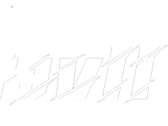
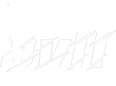
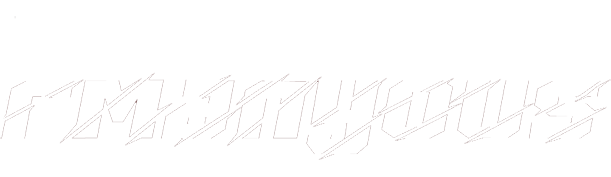
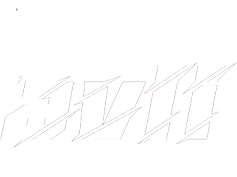
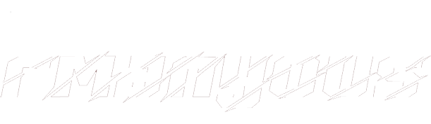
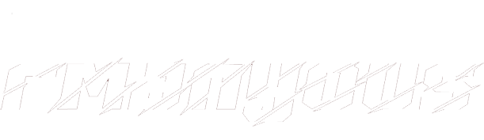
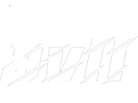
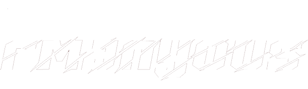

ICT & Media Design Portfolio
 

 





Dit semester werk ik drie keer in groepen, variërend van 2 tot 5 personen. Ondanks dat ik best goed in
groepen kan werken, ben ik een control freak en neig ik er snel toe mijn eigen manier van werken op te
leggen.
Omdat ik dit semester al eens heb gevolgd, weet ik vaak al snel wat er moet gebeuren, waardoor ik dit
semester vaak (onbedoeld) de leiding heb genomen.
Hieronder leg ik kort uit wat mijn ervaring per groep was.
Het eerste groepje waarmee ik werkte was Creative Inc. Samen kozen we die naam en ik creëerde het
groepslogo met een AI-generator (Afbeelding 1). Creative Inc. bestond uit Artun, Danny, Thammy en ik
natuurlijk.
Helaas verliep niet alles vlekkeloos met late of afwezige
teamleden en gemiste afspraken.
Ondanks dat waren er ook positieve momenten tijdens vergaderingen waar
we
belangrijke beslissingen namen over de brand guide en contentstrategie voor evi. Ondanks alle
uitdagingen
kwamen we er altijd als groep uit. Het uiteindelijke logo voor evi staat op Afbeelding 2.
Afbeelding 1 Creative Inc. Logo

Afbeelding 2 evi Logo
In de bronnenlijst onderaan de pagina vind je bij
'Creative Inc. zip' de FeedPulse die we als groep hebben ingevuld en de content van onze One Drive map.
Ook vind je in de bronnenlijst bij 'ICT & Media Design Research
2.0' een document waarin ik mijn werk voor elk project dit semester heb bijgehouden in korte lijnen.
De tweede groep waarmee ik heb gewerkt is Caribbean Drive. Dit groepje bestond uit Lucas, Rens, Rogier
en ik.
Ik was er niet bij toen ze de groepsnaam bedachten, maar kijk zelf maar op Afbeelding 4 wat hun reactie
was als je het kunt lezen. Kort samengevat komt de naam voort uit een AI Name generator en zijn mijn
groepsgenoten er van uit gegaan dat de naam vanzelfsprekend is voor het project.
Ik heb ook het logo van dit groepje gemaakt met een AI generator (Afbeelding 3).
Aan communicatie ontbrak het niet bij dit groepje. Het was alleen wel vaak van “Vandaag ben ik er niet”
of “Ik werk thuis vandaag”. En begrijp me niet verkeerd. Ik ben zelf ook een week ziek geweest en kon af
en toe ook niet komen. Alleen soms wilde ik gewoon wat dingen bespreken met mijn groepje en dan was niet
iedereen erbij. Wat wel vervelend was.
Met dit groepje kon ik al wel beter vooruit dan het vorige groepje. Ondanks de afwezigheid hier en daar,
was iedereen heel flexibel in zijn taken. Alles was snel af en als iemand ergens niet uit kwam, was het
samen als snel opgelost. Afspraken waren ook duidelijk. Het ging dus voornamelijk soepel in het groepje.
We hebben het UX project ook netjes afgerond.
Afbeelding 3 Creative Inc. logo dark background
Afbeelding 4
In de bronnenlijst onderaan de pagina vind je bij 'Caribbean Drive zip' de FeedPulse die we als groep hebben ingevuld en de content van onze One Drive map.
De derde en laatste groep waarin ik heb gezeten voor het Development Project was B, D & T development. De groep
bestond uit Danny, Thammy en ik. Vandaar de naam (Bavli, Danny & Thammy Development). Het was eigenlijk eerst B
& D Development, omdat Danny en ik hadden afgesproken om in een groepje te gaan. Het was namelijk de bedoeling
dat je met iemand in de groep zit die ongeveer op jouw level qua development skills zit en Danny en ik weten van
elkaar (ook van vorig semester) dat wij daar wel wat van weten. Maar omdat Thammy nog geen groepje had, heeft ze
gevraagd of ze bij ons kon joinen in het groepje. Geen probleem natuurlijk, maar Thammy is nog wel wat nieuw
voor Development en dat konden Danny en ik wel merken. Dat maakt natuurlijk niks uit, want we zijn een groep om
elkaar te ondersteunen. En ondanks dat Thammy nog niet veel weet over Development, heeft ze goed werk geleverd.
Ze heeft een productpagina gemaakt en de footer, dus niet slecht.
In principe zou je kunnen zeggen dat we weer de eerste groep zijn (Creative inc.), maar dan zonder Artun. De
communicatie in deze groep ging nogal vanzelfsprekend. We wisten al hoe en wat. We hadden namelijk al afspraken
gemaakt toen we Creative Inc. waren en we wisten van elkaar al hoe we het project wilden aanpakken.
Ondanks dat ik eerder heb aangegeven dat het met Creative Inc. wat ingewikkelder was in de groep (Niet alleen de
communicatie), ging het deze keer wel gewoon soepel. Iedereen wist wat die moest doen en iedereen wist wat het
plan was.
In de zip van ons groepje onderaan de bronnenlijst vind je de inhoud van onze
One Drive. Een document van
de brand guide die we gebruikten voor het developen en de code die ik gebruikte. Danny en
Thammy hadden hun code lokaal opgeslagen.
Je kunt de One Drive mappen van mijn groepen en meerdere bronnen de groepscommunicatie horen hieronder vinden.
Copyright ©2023 By Bavli Armanyous, All Rights Reserved